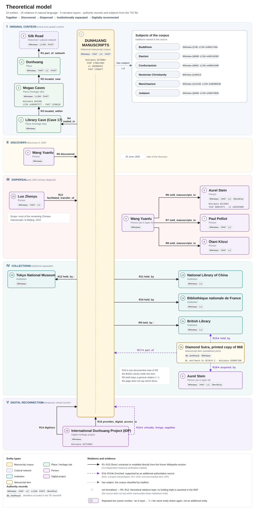
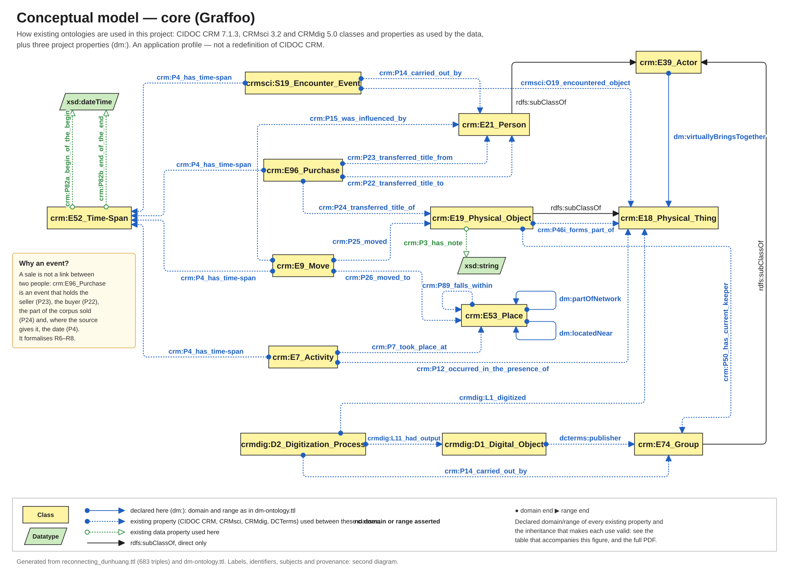
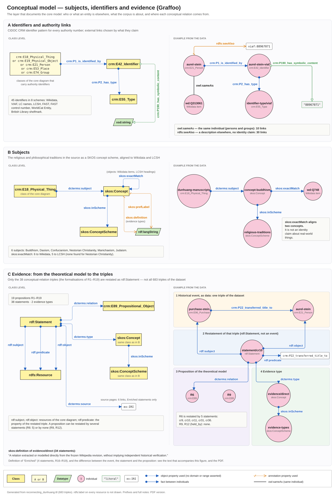
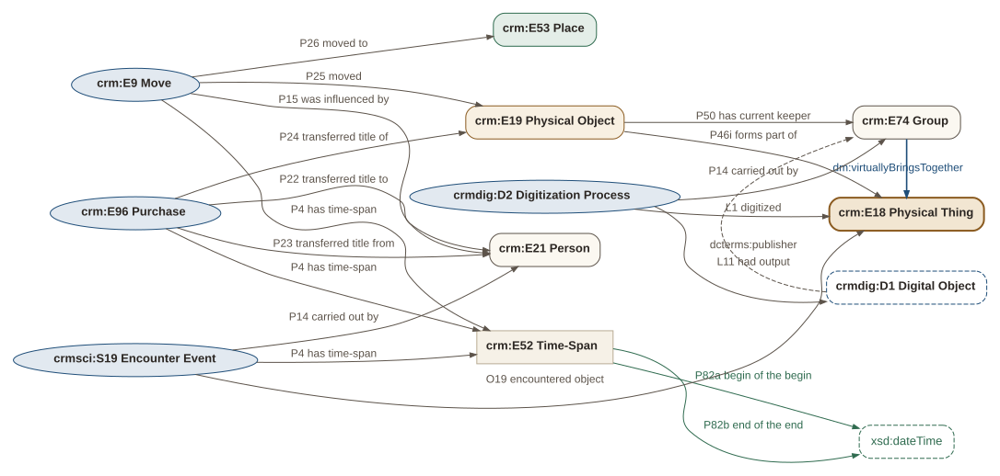

Chapter 02 · Models
Models
The question of this pageHow does a story told in prose become a formal model?
We described the domain in natural language, then formalized it with CIDOC CRM and its extensions.
Read this first
Four modelling decisions
- 1Events at the centreA sale is an event, not a line between two people
A purchase links a seller, a buyer, an object and a time, which a direct relation cannot hold. R6 “sold manuscripts to” becomes a
From theory to formalizationcrm:E96_Purchase. - 2EvidenceEvery relation says where it comes from
Direct relations are stated in the frozen article, without implying independent historical verification; Enriched ones (R16–R19) need another source, and each names its sources in the TEI and as
Evidence typesdcterms:sourcein the RDF. - 3◇ What the source does not sayR9 and R12 stay in the theory
The British Library and the Tokyo National Museum hold manuscripts, but the article does not say which ones, so no holding triple is asserted in the RDF. In the diagram they carry the ◇.
R9 and R12 - 4One documented item · EnrichedThe Diamond Sutra of 868 (R17–R19)
Part of the corpus (
Modelling decisionsP46i: a historical part–whole, not a claim that the corpus is still kept together), bought by Stein (P24: from the IDP’s research, not an item-by-item list, and no judgement on legitimacy), kept by the British Library (P50: custody, not ownership). R19 is one case of R9, not a formalisation of it. In the diagram: the violet dashed arrows.
Theoretical model
The entities of the article and the relations between them, R1–R19, in natural language and in five narrative layers. No ontology terms are used here; they appear in the conceptual model.
Shown at reading size. Scroll sideways, use “Fit to width” for an overview, or open the PDF.



Evidence types
Each relation carries one of two evidence types, defined in the TEI taxonomy and published in the RDF as skos:definition.
- Direct
- A relation extracted or modelled directly from the frozen Wikipedia revision, without implying independent historical verification. 34 restated triples
- Enriched
- Enriched relation supported by an additional authoritative source rather than by the frozen Wikipedia revision. In this project: R16 is the project's interpretation of the International Dunhuang Project's (now International Dunhuang Programme) institutional description; R17-R19 add one documented item, the printed Diamond Sutra of 868 (British Library, Or.8210/P.2), from the IDP catalogue and research articles. Each Enriched relation points to its own sources (relation/@source, listBibl enrichment-sources) and is kept distinct from Direct evidence drawn from the frozen Wikipedia revision. 4 restated triples (R16–R19)
R9 and R12 (◇)
R9 and R12 (held_by: British Library, Tokyo National Museum) are kept as relations of the theoretical model, but no holding triple is asserted for them in the RDF, because the source does not say which manuscripts these institutions hold. The ◇ marks this; the line style still shows only the evidence type.
R17–R19 add one documented item that the page does not name: the printed Diamond Sutra of 868 (British Library, Or.8210/P.2), from the International Dunhuang Programme. R19 (the British Library holds it) is one documented case of R9, not a formalisation of it: R9 stays a general relation, still marked ◇. All three are Enriched, and each points to its own sources.
Wang Yuanlu and Aurel Stein appear in more than one narrative layer, where they act, so that the arrows stay short. A repeated box keeps the same number and refers to the same entity; it is not an additional entity. The theoretical model contains 16 distinct entities.
Relations R1–R19
| ID | Subject | Relation | Object | Evidence |
|---|---|---|---|---|
| R1 | Dunhuang | part_of_network | Silk Road | Direct |
| R2 | Mogao Caves | located_near | Dunhuang | Direct |
| R3 | Library Cave (Cave 17) | located_within | Mogao Caves | Direct |
| R4 | Dunhuang Manuscripts | sealed_in | Library Cave (Cave 17) | Direct |
| R5 | Wang Yuanlu | discovered | Dunhuang Manuscripts | Direct |
| R6 | Wang Yuanlu | sold_manuscripts_to | Aurel Stein | Direct |
| R7 | Wang Yuanlu | sold_manuscripts_to | Paul Pelliot | Direct |
| R8 | Wang Yuanlu | sold_manuscripts_to | Ōtani Kōzui | Direct |
| R9 | Dunhuang Manuscripts | held_by | British Library | Direct |
| R10 | Dunhuang Manuscripts | held_by | Bibliothèque nationale de France | Direct |
| R11 | Dunhuang Manuscripts | held_by | National Library of China | Direct |
| R12 | Dunhuang Manuscripts | held_by | Tokyo National Museum | Direct |
| R13 | Luo Zhenyu | facilitated_transfer_of | Dunhuang Manuscripts | Direct |
| R14 | International Dunhuang Project | digitizes | Dunhuang Manuscripts | Direct |
| R15 | International Dunhuang Project | provides_digital_access_to | Dunhuang Manuscripts | Direct |
| R16 | International Dunhuang Project | virtually_brings_together | Dunhuang Manuscripts | Enriched |
| R17 | Diamond Sutra, printed copy of 868 | part_of | Dunhuang Manuscripts | Enriched |
| R18 | Diamond Sutra, printed copy of 868 | acquired_by | Aurel Stein | Enriched |
| R19 | Diamond Sutra, printed copy of 868 | held_by | British Library | Enriched |
Conceptual model
The same domain formalized with CIDOC CRM 7.1.3, CRMsci 3.2, CRMdig 5.0 and three project properties. Two diagrams in Graffoo notation, both drawn from the RDF dataset: the core of the model, and the layer that documents it.
Core
Shown at reading size. Scroll sideways, use “Fit to width” for an overview, or open the PDF.

PDF, full version with ontology box, prefixes and tableSVG (web)SVG (full)


- Dotted arcs (Graffoo “property facility”): an existing property used between these classes. The arc asserts no domain or range; the declared signature is in the table below.
- Solid arcs: the three
dm:properties, drawn at the domain and range declared in dm-ontology.ttl. - Subclass arrows: only direct
rdfs:subClassOfaxioms between classes on the diagram (E19 ⊑ E18, E21 ⊑ E39, E74 ⊑ E39). Indirect paths are given in the table.
Why each reused property fits the classes it links
Declared domain → range in CIDOC CRM 7.1.3, CRMsci 3.2, CRMdig 5.0 and DCMI Terms 2020; ⊑ means “subclass of”.
Show the table of declared domains and ranges
| Property | Declared | Used here | Valid because |
|---|---|---|---|
crm:P4_has_time-span | E2 → E52 | E96, E9, E7, S19 | E96 ⊑ E8 ⊑ E7; E9 ⊑ E7; E7 ⊑ E5 ⊑ E4 ⊑ E2 S19 ⊑ S27 ⊑ I1 ⊑ E7 |
crm:P7_took_place_at | E4 → E53 | E7 → E53 | E7 ⊑ E5 ⊑ E4 |
crm:P12_occurred_in_the_presence_of | E5 → E77 | E7 → E18 | E7 ⊑ E5; E18 ⊑ E72 ⊑ E70 ⊑ E77 |
crm:P14_carried_out_by | E7 → E39 | S19 → E21, D2 → E74 | S19 ⊑ S27 ⊑ I1 ⊑ E7; D2 ⊑ D11 ⊑ D7 ⊑ E11 ⊑ E7 E21 ⊑ E39; E74 ⊑ E39 |
crm:P15_was_influenced_by | E7 → E1 | E9 → E21 | E9 ⊑ E7; E21 ⊑ … ⊑ E1 |
crm:P22_transferred_title_to | E8 → E39 | E96 → E21 | E96 ⊑ E8; E21 ⊑ E39 |
crm:P23_transferred_title_from | E8 → E39 | E96 → E21 | E96 ⊑ E8; E21 ⊑ E39 |
crm:P24_transferred_title_of | E8 → E18 | E96 → E19 | E96 ⊑ E8; E19 ⊑ E18 |
crm:P25_moved | E9 → E19 | E9 → E19 | direct |
crm:P26_moved_to | E9 → E53 | E9 → E53 | direct |
crm:P46i_forms_part_of | E18 → E18 | E19 → E18 | E19 ⊑ E18 |
crm:P50_has_current_keeper | E18 → E39 | E19 → E74 | E19 ⊑ E18; E74 ⊑ E39 |
crm:P89_falls_within | E53 → E53 | E53 → E53 | direct |
crm:P3_has_note | E1 → E62 | E19 → xsd:string | E19 ⊑ … ⊑ E1; E62 String as literal |
crm:P82a / P82b | E52 → E61 | E52 → xsd:dateTime | direct; E61 Time Primitive as literal |
crmsci:O19_encountered_object | S19 → E18 | S19 → E18 | direct |
crmdig:L1_digitized | D2 → E18 | D2 → E18 | direct |
crmdig:L11_had_output | D7 → D1 | D2 → D1 | D2 ⊑ D11 ⊑ D7 |
dcterms:publisher | none | D1 → E74 | no domain or range (range includes Agent) |
Subjects, identifiers and evidence
Shown at reading size. Scroll sideways, use “Fit to width” for an overview, or open the PDF.

PDF, full version with notes and prefixesSVG (web)SVG (full)


A · Identifiers and authority links. Every authority number is a crm:E42_Identifier with its scheme (crm:E55_Type) and its value (crm:P190_has_symbolic_content). External links are chosen by what they claim: owl:sameAs (10 links) only where the external record is the same individual (persons and groups); rdfs:seeAlso (30 links) for a description elsewhere, with no identity claim (the corpus and the places link to Wikidata this way).
B · Subjects. The six traditions named in the source form a SKOS concept scheme. skos:exactMatch aligns all six with Wikidata items and five with Library of Congress Subject Headings (no heading was found for Nestorian Christianity). It aligns concepts; it does not say that two real-world things are identical, nor that the corpus is Buddhism.
C · Evidence. Only the 38 conceptual-relation triples (the formalisations of R1–R19) are restated as rdf:Statement, not all 683 triples of the dataset. Three kinds of resource are kept apart:
- The historical event, as data —
purchase-stein(crm:E96_Purchase); the triplepurchase-stein crm:P22_transferred_title_to aurel-steinis a fact of the dataset. - The restatement —
statement/cr10(rdf:Statement) restates that one triple so that it can be annotated. It is neither the sale nor the proposition. - The proposition — R6 (
crm:E89_Propositional_Object) is a relation of the theoretical model (“sold manuscripts to”). Statements point to it withdcterms:relation; R6 is restated by 5 statements, R9 and R12 by none.
Other views
Generated from the same RDF in the colours of this website: the core classes used by the modelling cases below, and the instance graph of all individuals.



EventPerson or institutionPlaceThe corpus (E18)Physical subset (E19)Time-spanDigital objectProject property (dm:)DCTerms propertyEnriched relation
From theory to formalization
Relations become events: R6 is formalized as a purchase.
Theoretical modelR6
Conceptual modelE96 Purchase
Modelling decisions
| Modelling case | Choice | Rationale |
|---|---|---|
| Manuscript corpus | crm:E18_Physical_Thing; bought or moved groups as crm:E19_Physical_Object | The dispersed corpus is treated as a broad physical thing, not an E78_Curated_Holding, since no single actor curates it; E19 is kept for the identifiable groups of manuscripts. |
| Discovery | crmsci:S19_Encounter_Event | Finding the cave is the first encounter with something that already existed. |
| Purchase | crm:E96_Purchase | A sale links a seller, a buyer, an object and a time, which a direct relation between two people cannot hold. |
| Transfer to Beijing | crm:E9_Move of an E19 subset | P25_moved applies to physical objects, and the source says only the remaining Chinese manuscripts were moved. |
| Digitization | crmdig:D2_Digitization_Process | The digital surrogate is kept separate from the dispersed manuscripts it copies. |
| Diamond Sutra, part of the corpus (R17) | crm:P46i_forms_part_of the corpus | A historical physical part-whole relation: the IDP records the scroll among the bundles of Cave 17, and the corpus is the physical aggregate sealed there. In CIDOC CRM 7.1.3, P46 “does not specify when and for how long a component element resided in the respective whole”: the triple does not say that the corpus is still kept together, nor when the scroll left it. It is not a classification; what the texts are about is given by dcterms:subject. |
| Diamond Sutra, bought by Stein (R18) | crm:P24_transferred_title_of from the existing purchase by Stein | Based on the IDP's research on Stein's acquisition of 1907 (the bundles handed over between 21 May and 6 June 1907), not on an item-by-item list of the transaction. It records the transfer as these sources describe it, and makes no judgement on the legitimacy of the transaction. |
| Diamond Sutra, British Library (R19) | crm:P50_has_current_keeper | Custody, not ownership (ownership would be crm:P52_has_current_owner, which is not used). |
Ontologies used
| Prefix | Vocabulary | Used in this project for |
|---|---|---|
crm: | CIDOC CRM 7.1.3 | People, places, institutions, physical things and the events of the story. |
crmsci: | CRMsci 3.2 | The discovery, as an encounter event. |
crmdig: | CRMdig 5.0 | The digitization and the digital surrogate. |
skos: | SKOS | The religious traditions as a concept scheme matched to Wikidata and LCSH. |
dcterms: | DCMI Metadata Terms | Subjects, the publisher of the digital surrogate, and the provenance and sources of statements. |
owl: rdfs: | OWL, RDFS | Links to external authorities and the definition of project properties. |
dm: | Project namespace | Three properties for relations no existing property expresses. |
Project properties
Defined in dm-ontology.ttl.
| Property | Definition | Domain → range |
|---|---|---|
dm:locatedNear | Relates two places that are close to each other without sharing a boundary or one containing the other. | crm:E53_Place → crm:E53_Place |
dm:partOfNetwork | Relates a place to a larger historical network of routes of which it was a node. | crm:E53_Place → crm:E53_Place |
dm:virtuallyBringsTogether | Relates an actor to a dispersed physical corpus whose parts it reunites in a shared digital environment. | crm:E39_Actor → crm:E18_Physical_Thing |